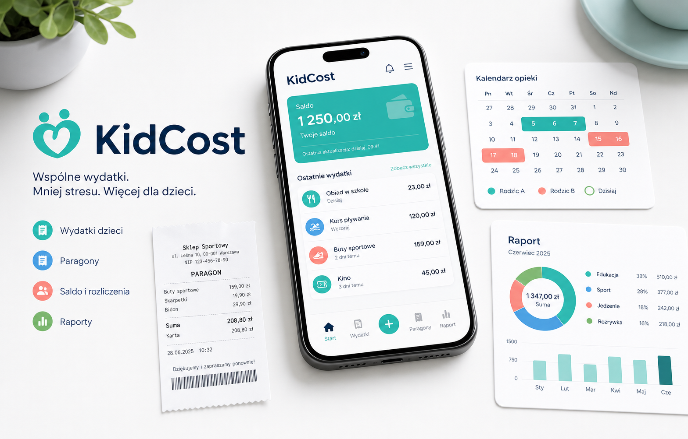

Pełna przejrzystość
Każdy wydatek, dowód i status są w jednym miejscu.
KidCost pomaga wspólnie śledzić wydatki na dziecko, dodawać paragony, uzgadniać kontekst opieki i generować czytelne raporty. Mniej konfliktów. Więcej jasności.

Każdy wydatek, dowód i status są w jednym miejscu.
Fakty zamiast emocji: kwota, termin, status i kontekst.
Powiadomienia i raporty projektowane bez wrażliwych skrótów.
Zestawienia gotowe dla Was, mediatora lub prawnika.
Różne sytuacje, jedno spokojne narzędzie. Wybierz moment dnia i zobacz, co KidCost porządkuje za Was.
Kto
Co może zrobić
Dodać koszt, przypiąć paragon i od razu zobaczyć wpływ na saldo.
Kiedy
Kiedy wraca z zakupów i chce zamknąć temat zanim zniknie paragon.
Cztery kroki, które zmieniają chaos paragonów w spokojny ledger.
Kwota, data, kategoria, kto zapłacił i opcjonalny dowód.
Opieka, dziecko, planowany zakup, terminy zwrotu albo EOB.
Od razu wiesz, kto komu ile jest winien i za co.
Eksportuj koszty, dowody i kontekst bez mieszania z saldem.
Prywatne podglądy, neutralny język, sanitizacja załączników i raporty bez zbędnych danych wrażliwych.
Miesięczne i roczne zestawienia kosztów, dowodów, opieki i kontekstu. Czytelne dla Was, gotowe do rozmowy z mediatorem.
Wpisz dwie sumy zapłacone przez rodziców. KidCost pokazuje prosty kierunek rozliczenia bez prawniczego tonu.
Zacznijcie od jednego kosztu. Reszta porządkuje się krok po kroku.
Zobacz scenariusze